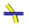
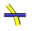

Part Design è l'ambiente per la costruzione di oggetti Parte basati su disegni 2D che mette a disposizione gli strumenti per modellare parti solide complesse e si basa sulla metodologia delle funzioni editabili per produrre un singolo solido contiguo.
Questo ambiente è strettamente connesso con l'ambiente Sketcher che è l'ambiente per gli schizzi di base.
Un unico solido contiguo è un elemento simile a una fusione od a qualcosa di ricavato da un unico blocco di metallo. Se l'elemento coinvolge chiodi, viti, colla o saldature, non è un unico solido contiguo. Come esempio pratico, PartDesign non dovrebbe essere utilizzato per modellare una sedia di legno, ma può essere utilizzato per modellare i suoi sotto-componenti (gambe, doghe, sedile, ecc). I sotto-componenti sono associati con gli ambienti Assembly, Part o Draft.

Contents
Concetti base sul flusso di lavoro
Lo schizzo costituisce il blocco di partenza per creare e modificare le parti solide.
Il flusso di lavoro si può riassumere in questo modo: prima si crea uno schizzo contenente la geometria 2D e poi si utilizza uno strumento per costruire i solidi dallo schizzo.
I principali strumenti attualmente disponibili sono:
-
 Estrudi (Pad) che estrude uno schizzo
Estrudi (Pad) che estrude uno schizzo -
 Scava (Pocket) che crea uno scavo in un solido esistente
Scava (Pocket) che crea uno scavo in un solido esistente -
 Rivoluziona (Revolve) che crea un solido ruotando uno schizzo lungo un asse
Rivoluziona (Revolve) che crea un solido ruotando uno schizzo lungo un asse -
 Scanala (Groove) che crea una scanalatura in un solido esistente
Scanala (Groove) che crea una scanalatura in un solido esistente
Inoltre sono disponibili degli strumenti per modificare e trasformare i solidi prodotti. (Vedere più avanti)
Altri strumenti sono previsti nelle versioni future.
Un aspetto molto importante dell'ambiente PartDesign è dato dalla sua integrazione con il modulo Schizzo. Gli schizzi possono essere creati su piani standard (XY, XZ, YZ e su piani paralleli a questi) oppure sulla faccia piana di un solido esistente. Nell'ultimo caso, il solido esistente diventa il supporto dello schizzo. Alcuni strumenti funzionano solo con disegni che hanno un supporto, per esempio, Scava senza un supporto non dispone di materiale da rimuovere!
Dopo la sua creazione, una geometria solida può essere modificata con smussi e raccordi, oppure trasformata e, ad esempio, riflessa o duplicata.
L'ambiente Part Design ha lo scopo di creare un unico solido collegato. I solidi multipli (composti da più solidi) sono possibili con l'ambiente di lavoro Assemblaggio (per ora vedere il Progetto di Assemblaggio nel piano di sviluppo).
Quando si crea un modello nell'ambiente Part Design, ogni nuova funzione prende l'ultima forma e vi aggiunge o rimuove qualcosa, creando delle dipendenze lineari di funzione in funzione, passo dopo passo, così come viene creato il modello. Quindi una funzione "Cut" non è composta solo dal foro, ma è formata da tutta la parte prodotta fino a quel momento, compreso il foro. Quando al modello viene aggiunta una nuova funzionalità, FreeCAD disattiva la visibilità delle precedenti funzioni. Per questo motivo l'utente, di solito, deve avere visibile nell'albero del modello solo la voce (funzione) più recente, perché altrimenti le fasi del modello si sovrappongono tra di loro, ed i fori sono riempiti dalle precedenti funzioni del modello che non possiedono ancora i fori.
Per attivare o disattivare la visibilità di un oggetto, selezionarlo nella struttura gerarchica e premere la barra spaziatrice. Di solito tutto, tranne l'ultima voce della struttura gerarchica dovrebbe essere grigio e quindi non visibile nella vista 3D.
Per attivare o disattivare la visibilità di un oggetto, selezionarlo nella struttura gerarchica e premere la barra spaziatrice. Di solito tutto, tranne l'ultima voce della struttura gerarchica dovrebbe essere grigio e quindi non visibile nella vista 3D.
Gli strumenti
Gli strumenti si trovano nel menu Part Design che appare quando si carica questo modulo.
Essi comprendono anche gli strumenti dell'ambiente Sketcher, dato che il modulo Part Design dipende da esso.
Gli strumenti di Schizzo
Geometria dello schizzo
Gli strumenti per creare gli oggetti.
-
 Punto: Disegna un punto.
Punto: Disegna un punto. -
 Linea tra due punti: Disegna un segmento delimitato da due punti.
Linea tra due punti: Disegna un segmento delimitato da due punti. -
 Arco: Disegna un arco di circonferenza specificando il centro, il raggio, l'angolo iniziale e l'angolo finale.
Arco: Disegna un arco di circonferenza specificando il centro, il raggio, l'angolo iniziale e l'angolo finale. -
 Arco da tre punti: Disegna un arco da due punti finali e un punto della circonferenza.
Arco da tre punti: Disegna un arco da due punti finali e un punto della circonferenza. -
 Circonferenza: Disegna una circonferenza prendendo in input il centro e il raggio.
Circonferenza: Disegna una circonferenza prendendo in input il centro e il raggio. -
 Circonferenza da tre punti : Disegna un cerchio da tre punti sulla circonferenza.
Circonferenza da tre punti : Disegna un cerchio da tre punti sulla circonferenza. -
 Sezioni di coni:
Sezioni di coni:
-
 Ellisse dal centro : Disegna un'ellisse dal centro, raggio maggiore e raggio minore.
Ellisse dal centro : Disegna un'ellisse dal centro, raggio maggiore e raggio minore. -
 Ellisse da tre punti : Disegna una ellisse da due punti del raggio maggiore) e un punto del raggio minore.
Ellisse da tre punti : Disegna una ellisse da due punti del raggio maggiore) e un punto del raggio minore. -
 Arco di ellisse : Disegna un arco di ellisse dal punto centrale, un punto del raggio maggiore, il punto iniziale e il punto finale.
Arco di ellisse : Disegna un arco di ellisse dal punto centrale, un punto del raggio maggiore, il punto iniziale e il punto finale.  Arco di iperbole: Disegna un arco di iperbole. (v0.17)
Arco di iperbole: Disegna un arco di iperbole. (v0.17) Arco di parabola: Disegna un arco di parabola. (v0.17)
Arco di parabola: Disegna un arco di parabola. (v0.17)
-
-
 Polilinea : Disegna una linea composta da segmenti definiti da punti.
Polilinea : Disegna una linea composta da segmenti definiti da punti. -
 Rettangolo: Disegna un rettangolo specificando gli angoli opposti.
Rettangolo: Disegna un rettangolo specificando gli angoli opposti. -
 Triangolo equilatero: Disegna un triangolo equilatero inscritto in una circonferenza di costruzione.
Triangolo equilatero: Disegna un triangolo equilatero inscritto in una circonferenza di costruzione. -
 Quadrato: Disegna un quadrato inscritto in una circonferenza di costruzione.
Quadrato: Disegna un quadrato inscritto in una circonferenza di costruzione. - Pentagono: Disegna un pentagono inscritto in una circonferenza di costruzione.
-
 Esagono: Disegna un esagono inscritto in una circonferenza di costruzione.
Esagono: Disegna un esagono inscritto in una circonferenza di costruzione. -
 Ettagono: Disegna un ettagono inscritto in una circonferenza di costruzione.
Ettagono: Disegna un ettagono inscritto in una circonferenza di costruzione. -
 Ottagono: Disegna un ottagono inscritto in una circonferenza di costruzione.
Ottagono: Disegna un ottagono inscritto in una circonferenza di costruzione. -
 Asola: Disegna un rettangolo con due lati opposti raccordati con un semicerchio, un'asola.
Asola: Disegna un rettangolo con due lati opposti raccordati con un semicerchio, un'asola. -
 Raccorda: Raccorda due linee unite in un punto. Selezionare entrambe le linee o fare clic sul punto di angolo, poi attivare lo strumento.
Raccorda: Raccorda due linee unite in un punto. Selezionare entrambe le linee o fare clic sul punto di angolo, poi attivare lo strumento. - Rifila: Accorcia una linea, un cerchio o un arco fino al primo nodo, punto di intersezione.
-
 Geometria esterna: Crea un segmento collegato a una geometria esterna.
Geometria esterna: Crea un segmento collegato a una geometria esterna. -
 Linea di costruzione: Commuta un elemento in modalità Costruzione. L'oggetto selezionato e impostato come elemento di costruzione non sarà utilizzato in un'operazione di geometria 3D (es una linea di costruzione). Fino alla versione 0.15. Questa è l'icona che è stata utilizzata fino alla v0.15. Fino a FreeCAD v0.16 l'utente doveva creare prima una regolare geometria di Sketchup (bianca) e quindi utilizzare questo strumento per modificarla in geometria di costruzione (blu).
Linea di costruzione: Commuta un elemento in modalità Costruzione. L'oggetto selezionato e impostato come elemento di costruzione non sarà utilizzato in un'operazione di geometria 3D (es una linea di costruzione). Fino alla versione 0.15. Questa è l'icona che è stata utilizzata fino alla v0.15. Fino a FreeCAD v0.16 l'utente doveva creare prima una regolare geometria di Sketchup (bianca) e quindi utilizzare questo strumento per modificarla in geometria di costruzione (blu). -
 Costruzione: Commuta un elemento selezionato o l'intera barra delle geometrie in modalità Costruzione. Introdotto dalla versione 0.16. In FreeCAD v0.16 è stato aggiunta la capacità di creare la geometria direttamente in modalità di costruzione, e quindi l'icona è stata cambiata in questa. Selezionando una geometria di Sketcher esistente e facendo clic su questo strumento si commuta la geometria tra la modalità normale e di costruzione proprio come nelle versioni precedenti di FreeCAD. A partire da FreeCAD v0.16, selezionando questo strumento quando non è selezionata alcuna geometria Sketcher cambia la modalità (da normale a geometria di costruzione) in cui verranno creati gli oggetti futuri.
Costruzione: Commuta un elemento selezionato o l'intera barra delle geometrie in modalità Costruzione. Introdotto dalla versione 0.16. In FreeCAD v0.16 è stato aggiunta la capacità di creare la geometria direttamente in modalità di costruzione, e quindi l'icona è stata cambiata in questa. Selezionando una geometria di Sketcher esistente e facendo clic su questo strumento si commuta la geometria tra la modalità normale e di costruzione proprio come nelle versioni precedenti di FreeCAD. A partire da FreeCAD v0.16, selezionando questo strumento quando non è selezionata alcuna geometria Sketcher cambia la modalità (da normale a geometria di costruzione) in cui verranno creati gli oggetti futuri.
{kind=link}
{kind=link}
Vincoli dello schizzo
I vincoli sono utilizzati per stabilire le relazioni tra gli elementi del disegno, e per bloccare il disegno lungo l'asse verticale e l'asse orizzontale. Alcuni vincoli richiedono dei Vincoli di supporto.
Vincoli non associati a valori numerici
-
 Coincidente: Crea un vincolo di coincidenza (punto-con-punto) tra due punti selezionati.
Coincidente: Crea un vincolo di coincidenza (punto-con-punto) tra due punti selezionati. -
 Punto su oggetto: Crea un vincolo (fissa) un punto-su-un-oggetto sull'elemento selezionato.
Punto su oggetto: Crea un vincolo (fissa) un punto-su-un-oggetto sull'elemento selezionato. -
 Verticale: Crea un vincolo verticale per le linee o le polilinee selezionate. Si può selezionare più oggetti.
Verticale: Crea un vincolo verticale per le linee o le polilinee selezionate. Si può selezionare più oggetti. -
 Orizzontale: Crea un vincolo orizzontale per le linee o le polilinee selezionate. Si può selezionare più oggetti.
Orizzontale: Crea un vincolo orizzontale per le linee o le polilinee selezionate. Si può selezionare più oggetti. -
 Parallela: Crea un vincolo di parallelismo tra due linee selezionate.
Parallela: Crea un vincolo di parallelismo tra due linee selezionate. -
 Perpendicolare: Crea un vincolo di perpendicolarità tra due linee selezionate.
Perpendicolare: Crea un vincolo di perpendicolarità tra due linee selezionate. -
 Tangente: Crea un vincolo di tangenza tra due entità selezionate, o un vincolo collineare tra due segmenti di linea.
Tangente: Crea un vincolo di tangenza tra due entità selezionate, o un vincolo collineare tra due segmenti di linea. -
 Uguaglianza: Crea un vincolo di uguaglianza tra due entità selezionate. Se usato su cerchio o archi, il raggio viene posto uguale.
Uguaglianza: Crea un vincolo di uguaglianza tra due entità selezionate. Se usato su cerchio o archi, il raggio viene posto uguale. -
 Simmetria: Crea un vincolo simmetrica tra 2 punti rispetto a una linea.
Simmetria: Crea un vincolo simmetrica tra 2 punti rispetto a una linea. -
 Fissa: v 0.17 Consente di fissare un elemento geometrico in una data posizione applicando un singolo vincolo. Dovrebbe essere particolarmente utile per lavorare con le B-Splines. Vedere https://forum.freecadweb.org/viewtopic.php?f=9&t=26572
Fissa: v 0.17 Consente di fissare un elemento geometrico in una data posizione applicando un singolo vincolo. Dovrebbe essere particolarmente utile per lavorare con le B-Splines. Vedere https://forum.freecadweb.org/viewtopic.php?f=9&t=26572
Vincoli associati a dati
Per questi vincoli si possono usare le espressioni. I dati possono essere prelevati da un foglio di calcolo.
Le icone blu di questi vincoli si riferiscono alle funzioni introdotte nella versione 0.16 di FreeCAD, attivabili con  Commuta vincoli.
Commuta vincoli.
-
 Bloccato: Crea un vincolo che blocca l'elemento selezionato fissando le sue dimensioni verticali e orizzontali rispetto all'origine (le dimensioni si possono modificare in seguito).
Bloccato: Crea un vincolo che blocca l'elemento selezionato fissando le sue dimensioni verticali e orizzontali rispetto all'origine (le dimensioni si possono modificare in seguito). -
 Distanza orizzontale: Fissa la distanza orizzontale tra 2 punti o tra gli estremi di una linea. Se viene selezionato un solo elemento, la distanza viene impostata a partire dall'origine.
Distanza orizzontale: Fissa la distanza orizzontale tra 2 punti o tra gli estremi di una linea. Se viene selezionato un solo elemento, la distanza viene impostata a partire dall'origine. -

 Distanza verticale: Fissa la distanza verticale tra 2 punti o tra gli estremi di una linea. Se viene selezionato un solo elemento, la distanza viene impostata a partire dall'origine.
Distanza verticale: Fissa la distanza verticale tra 2 punti o tra gli estremi di una linea. Se viene selezionato un solo elemento, la distanza viene impostata a partire dall'origine. -
 Lunghezza: Vincola la lunghezza di una linea selezionata.
Lunghezza: Vincola la lunghezza di una linea selezionata. -
 Raggio: Vincola il raggio di un arco o un cerchio selezionato.
Raggio: Vincola il raggio di un arco o un cerchio selezionato. -

 Angolo interno: Fissa l'angolo interno tra due linee selezionate (o l'inclinazione di una linea).
Angolo interno: Fissa l'angolo interno tra due linee selezionate (o l'inclinazione di una linea). -
  Rifrazione: Crea un vincolo di rifrazione tra due linee per simulare secondo la Legge di Snell un raggio di luce che attraversa un'interfaccia.
 Rifrazione: Crea un vincolo di rifrazione tra due linee per simulare secondo la Legge di Snell un raggio di luce che attraversa un'interfaccia. -
 Allineamento interno: Allinea gli elementi selezionati alla forma selezionata, ad esempio una linea da convertire in asse maggiore di una ellisse.
Allineamento interno: Allinea gli elementi selezionati alla forma selezionata, ad esempio una linea da convertire in asse maggiore di una ellisse.
{kind=link}
{kind=link}
{kind=link}
{kind=link}
{kind=link}
- Commuta vincoli: Commuta una serie di vincoli, quelli associati a un valore numerico, da Decisivi a Indicatori e viceversa. Introdotto dalla versione 0.16
{kind=link}
Non ancora attivati
-
 Concentrico
Concentrico - Angolo esterno
-
 Punto alla fine
Punto alla fine -
 Punto in centro
Punto in centro -
 Punto all'inizio
Punto all'inizio - Punto su oggetto
-
 Tangente alla fine
Tangente alla fine -
 Tangente all'inizio
Tangente all'inizio
{kind=link}
{kind=link}
Altro
-
 Nuovo schizzo: Crea un nuovo schizzo su una faccia selezionata o in un piano. Se non si esegue nessuna selezione, di default, viene utilizzato il piano XY.
Nuovo schizzo: Crea un nuovo schizzo su una faccia selezionata o in un piano. Se non si esegue nessuna selezione, di default, viene utilizzato il piano XY. -
 Edita schizzo: Modifica lo schizzo selezionato.
Edita schizzo: Modifica lo schizzo selezionato. -
 Esci: Termina la modalità di modifica dello schizzo.
Esci: Termina la modalità di modifica dello schizzo. -
 Vista schizzo: Imposta la vista del modello in modo perpendicolare al piano dello schizzo.
Vista schizzo: Imposta la vista del modello in modo perpendicolare al piano dello schizzo. -
 Mappa schizzo su faccia: Mappa uno schizzo sulla faccia di un solido selezionata in precedenza.
Mappa schizzo su faccia: Mappa uno schizzo sulla faccia di un solido selezionata in precedenza. - Riposiziona schizzo: Permette di modificare la posizione di uno schizzo
- Convalida lo schizzo: Permette di controllare se nell'area di tolleranza ci sono dei punti distinti e di farli coincidere.
-
 Unisci schizzi: Unisce due o più schizzi.
Unisci schizzi: Unisce due o più schizzi. -
 Rifletti schizzo: Riflette uno schizzo rispetto all'asse verticale, o all'asse orizzontale e all'origine.
Rifletti schizzo: Riflette uno schizzo rispetto all'asse verticale, o all'asse orizzontale e all'origine.
Strumenti dello Sketcher
-
 Chiudi Forma: Crea una forma chiusa applicando i vincoli di coincidenza ai punti finali.
Chiudi Forma: Crea una forma chiusa applicando i vincoli di coincidenza ai punti finali.
-
 Collega Segmenti: Collega gli elementi dello schizzo applicando i vincoli di coincidenza ai punti finali.
Collega Segmenti: Collega gli elementi dello schizzo applicando i vincoli di coincidenza ai punti finali.
-
 Seleziona Vincoli: Seleziona i vincoli di un elemento dello schizzo.
Seleziona Vincoli: Seleziona i vincoli di un elemento dello schizzo.
-
 Seleziona Origine: Seleziona l'origine di uno schizzo.
Seleziona Origine: Seleziona l'origine di uno schizzo.
-
 Seleziona Asse Y: Seleziona l'asse verticale di uno schizzo.
Seleziona Asse Y: Seleziona l'asse verticale di uno schizzo.
-
 Seleziona Asse X: Seleziona l'asse orizzontale di uno schizzo.
Seleziona Asse X: Seleziona l'asse orizzontale di uno schizzo.
-
 Seleziona i vincoli ridondanti: Seleziona i vincoli ridondanti di uno schizzo.
Seleziona i vincoli ridondanti: Seleziona i vincoli ridondanti di uno schizzo.
-
 Seleziona i vincoli in conflitto: Seleziona i vincoli in conflitto di uno schizzo.
Seleziona i vincoli in conflitto: Seleziona i vincoli in conflitto di uno schizzo.
-
 Seleziona gli elementi associati da vincoli: Evidenzia gli elementi dello schizzo associati ai vincoli selezionati.
Seleziona gli elementi associati da vincoli: Evidenzia gli elementi dello schizzo associati ai vincoli selezionati.
- Mostra/Nascondi la geometria interna: Ricrea la geometria interna mancante di un elemento selezionato, oppure la cancella se non serve, per ora è applicabile solo a ellissi.
{kind=link}
-
 Simmetria: Copia un elemento dello schizzo in modo simmetrico rispetto ad una linea a scelta.
Simmetria: Copia un elemento dello schizzo in modo simmetrico rispetto ad una linea a scelta.
-
 Clona: Clona un elemento dello schizzo.
Clona: Clona un elemento dello schizzo.
{kind=link}
-
 Schiera lineare: Crea una schiera con gli elementi dello schizzo selezionati.
Schiera lineare: Crea una schiera con gli elementi dello schizzo selezionati.
-
 Cambia spazio virtuale: v 0.17 Permette di "nascondere" i vincoli e renderli nuovamente visibili. Vedere https://forum.freecadweb.org/viewtopic.php?f=9&t=26614
Cambia spazio virtuale: v 0.17 Permette di "nascondere" i vincoli e renderli nuovamente visibili. Vedere https://forum.freecadweb.org/viewtopic.php?f=9&t=26614
Preferenze
-
 Preferences...: Preferenze disponibili negli strumenti Sketcher.
Preferences...: Preferenze disponibili negli strumenti Sketcher.
Gli strumenti di Part Design
Strumenti di costruzione
Sono gli strumenti per creare oggetti solidi o rimuovere del materiale da un oggetto solido esistente.
- Estrusione: Estrude un oggetto solido da uno schizzo selezionato.
- Scavo: Crea una tasca da uno schizzo selezionato. Lo schizzo deve essere posizionato sulla superficie di un oggetto solido esistente.
- Rivoluzione: Crea un solido ruotando un disegno attorno ad un asse. Per ottenere un oggetto solido, il disegno deve avere un profilo chiuso.
- Scanalatura: Crea una scanalatura ruotando uno schizzo attorno ad un asse. Il disegno deve essere mappato sulla faccia di un oggetto solido esistente.
Strumenti di modifica
Sono gli strumenti per modificare gli oggetti esistenti. Essi permettono di scegliere quale oggetto modificare.
-
 Raccordo: Raccorda (arrotonda) i bordi di un oggetto.
Raccordo: Raccorda (arrotonda) i bordi di un oggetto. -
 Smusso: Smussa i bordi di un oggetto.
Smusso: Smussa i bordi di un oggetto. -
 Sformo: Applica uno sformo angolare alle facce di un oggetto.
Sformo: Applica uno sformo angolare alle facce di un oggetto.
Strumenti di trasformazione
Sono gli strumenti per trasformare gli elementi esistenti. Essi permettono di scegliere quale elemento trasformare.
-
 Rifletti: Operazione di simmetria su un piano o una faccia.
Rifletti: Operazione di simmetria su un piano o una faccia. -
 Schiera lineare: Crea una schiera lineare di elementi.
Schiera lineare: Crea una schiera lineare di elementi. -
 Schiera polare: Crea una schiera polare di elementi.
Schiera polare: Crea una schiera polare di elementi. -
 Scala: Scala gli elementi in un formato differente.
Scala: Scala gli elementi in un formato differente. -
 MultiTrasformazione: Permette di creare una trasformazione con qualsiasi combinazione delle altre trasformazioni.
MultiTrasformazione: Permette di creare una trasformazione con qualsiasi combinazione delle altre trasformazioni.
Strumenti booleani
Questi sono gli strumenti per creare operazioni booleane tra due o più corpi
-
 Booleane: Crea un'operazione booleana con due o più corpi
Booleane: Crea un'operazione booleana con due o più corpi
Extra
Alcune funzionalità opzionali che sono state create per l'ambiente Progettazione Parte (PartDesign Workbench):
-
 Progettazione guidata di un Albero: Genera un albero (di trasmissione) da una tabella di valori e consente di analizzare forze e momenti
Progettazione guidata di un Albero: Genera un albero (di trasmissione) da una tabella di valori e consente di analizzare forze e momenti
-
 Involute gear: permette di creare ingranaggi
Involute gear: permette di creare ingranaggi
Proprietà delle operazioni
I dati delle proprietà
Ci sono due tipi di dati delle proprietà delle operazioni e sono contenuti nelle corrispondenti schede.
- Le Proprietà Vista riguardano la Visualizzazione delle caratteristiche dell'oggetto selezionato.
- Le Proprietà Dati riguardano i dati Fisici dell'oggetto selezionato.
Quando si seleziona un oggetto, viene visualizzata una finestra di dialogo, selezionare la scheda desiderata cliccando sulle linguette che si trovano nella parte inferiore della tabella Proprietà.
Tutte le proprietà delle operazioni a cui è possibile accedere tramite la finestra di dialogo che si apre per modificare l'operazione sono visualizzate nella scheda dei Dati.
Vista
Base
|
{kind=link}
Dati
|
Base
Ogni operazione ha una posizione che può essere controllata tramite la tabella delle proprietà dei Dati. Essa controlla il posizionamento della parte rispetto al sistema di coordinate. NOTA: Le opzioni di posizionamento non influiscono sulle dimensioni fisiche dell'operazione, ma semplicemente sulla sua posizione nello spazio!
|
{kind=link}
Le proprietà presenti nelle schede possono variare secondo lo strumento utilizzato.
| Esempio di Placement disattivato. Nel caso della figura a fianco, sulla faccia superiore del cubo è stato mappato uno schizzo contenente un cerchio e poi è stato utilizzato lo strumento Pad per creare il cilindro. Le geometrie sono connesse come mostrato nel grafico delle dipendenze, quindi:
|
{kind=link}
Tutorial
I seguenti tutorial sono eseguibili solo con una versione di sviluppo di FreeCAD che attualmente non è disponibile come binario o come installer: